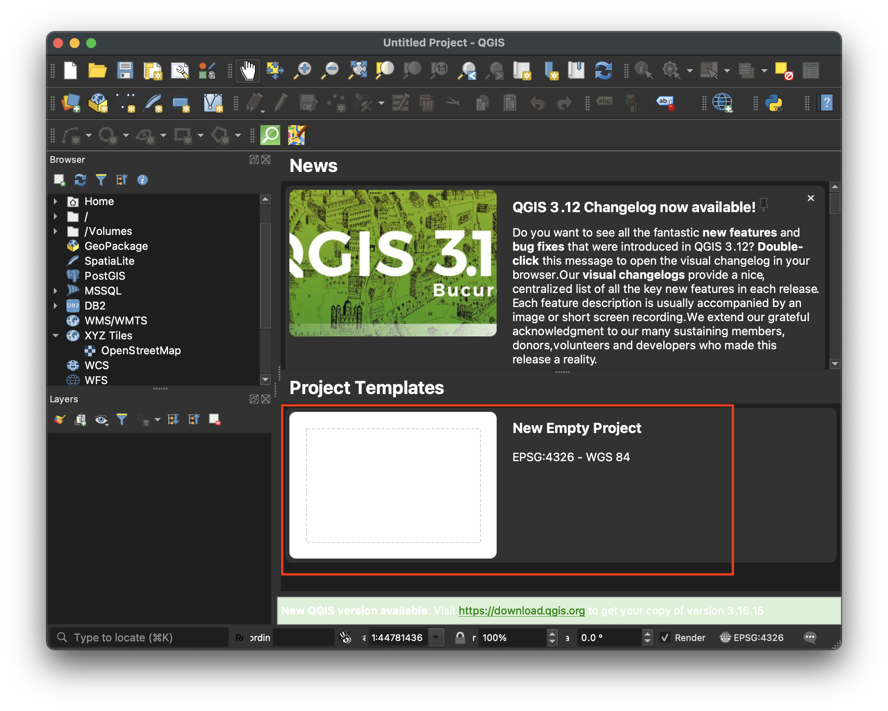
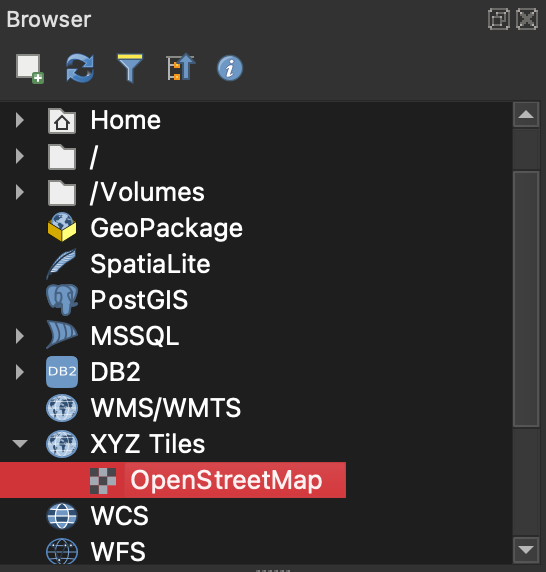
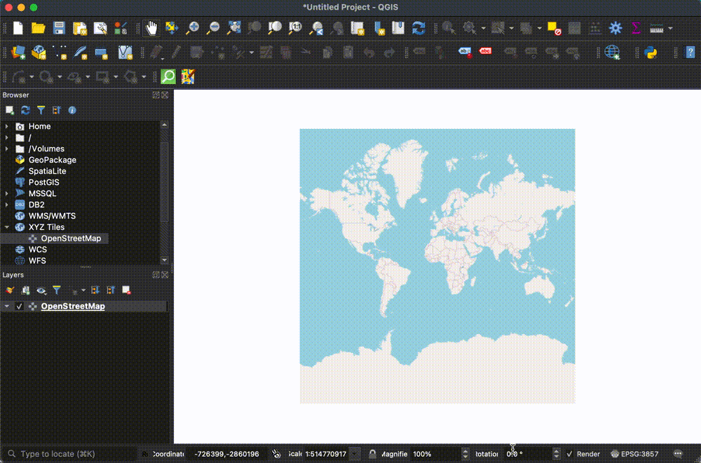

Add a Basemap in QGIS
Basemaps can be helpful reference points when working with spatial data.
How to add a basemap to your project
-
Open a new QGIS project. 
-
In the left-hand browser menu, locate
XYZ Tiles → OpenStreetMap
OpenStreetMap base tiles are built in to QGIS. 
-
Drag
OpenStreetMapinto theMap Canvas
-
Zoom in to the desired location by selecting the
Zoom Inmenu item, and clicking and dragging on theMap Canvas
Tips
- To add other styles of basemap not included by default in the QGIS install, you can run a Google search about the latest QGIS plugins for basemaps. Here is a 2018 article about using basemap plugin Quick Map Services for additional basemap styles.